Case study · Mobile ID app
California Digital Driver’s License
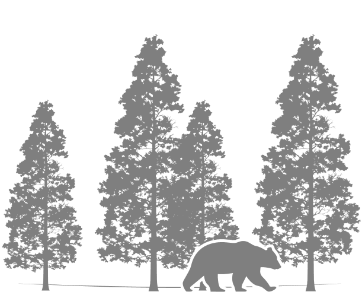
Project intro
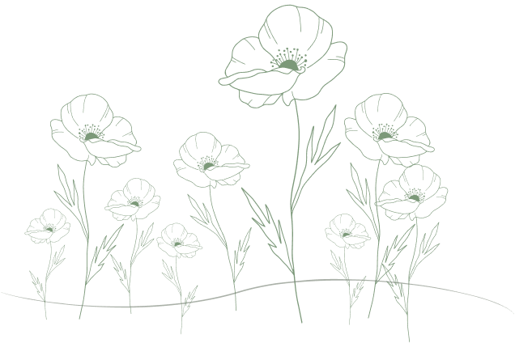
Overview
Digital IDs are a helpful solution for today’s society that is heavily dependent on one thing: their cellphone. Life moves fast and it is very easy to forget our physical IDs, especially if we already have our credit cards on our phones.
Some states, including California, have already began their own unique iterations for a digital ID application. It will take time and be difficult to switch from physical to digital, but let’s break down why it works.
Problems & Opportunities
Problems
- Poor hierarchy
- Crowded information
- No longer most efficient solution
Opportunities
- Dynamic & interactive
- Creative UI & illustrative designs
- Custom & personal
Project Goal
Create a beautiful design that gently guides the user with smooth elements and transitions.
Offer another level of customization, security and privacy so the user feels comfortable having all their information in one place.
Research &
plan
Competitive AnalysisThe physical ID
Strengths
the most widely accepted solution
has great security and verifiability (symbols, iconography, colors, barcodes).
Weaknesses
easy to lose and extremely hard to read due to clutter
lacks hierarchy, especially for those with poor vision.
Competitive AnalysisDigital IDs
State official and Apple/Samsung/Google digital IDs are already beginning to enter the arena. They are a great first step to transferring to digital identification methods. Both groups offer trustworthy, secure and easily verifiable solutions, while wallet apps like Apple and Samsung offer more aesthetically pleasing apps, with unique features like tap.
Brainstorming
I chose the state of California because of the variety of visual opportunities that the state’s culture can lend itself to. There are several unique state symbols or experiences that are easily recognizable as California. The bear on the flag and as the state’s animal, the state flower: poppy, and other concepts like the state colors: blue and orange.
Sketches
I wanted to explore different ways of laying out the information. At first, my ideas were more experimental. The idea was to scroll rather than having all the information ready at the start.
The splash screen was the most fun part to brainstorm with in terms of animation possibilities!
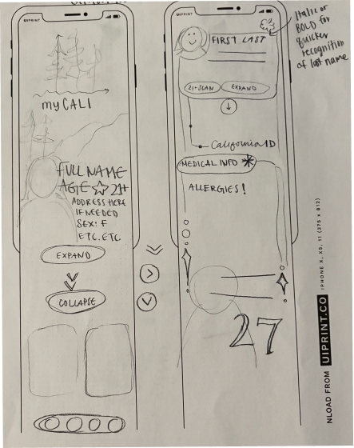
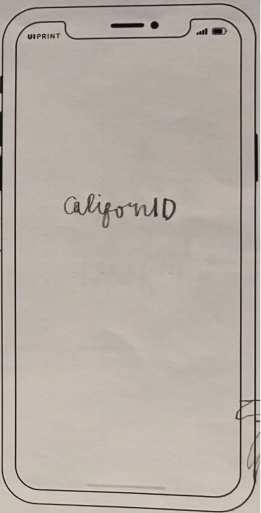
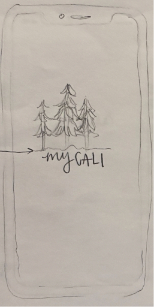
Development
Grid & Layout
- 4px grid
- IOS iPhone 16 & 17 Pro, 402 x 874px
- 4 columns, 16px margin & gutter
- Top safe area: 36px
- Bottom safe area: 34px
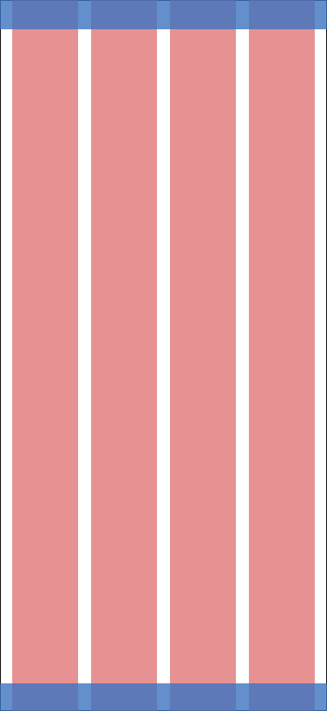
Inspiration BoardsCoastal Crush
This design approach calls to the fresh, coastal, and beachy appeal that California can bring. Playing off the state’s colors of blue and gold, this palette is fun and inviting. This design will make you want to go on vacation, reminding you that you live in the “golden state”. Referencing 70-80s retro style, this design is nostalgic yet something new.
Keywords:
- warm
- dreamy
- alive
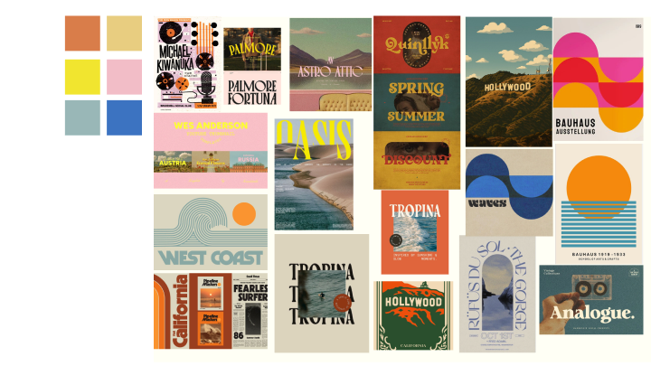
Inspiration BoardsNaturium
California has its bustling cities full of music, money, movies... but it also has its adventurous side. This design will play into California’s natural appeal, highlighting the beautiful Redwood trees, paired with modern, fresh, almost illustrative elements, to create a delicate design. Rounded puzzle-like elements will keep users engaged yet informed.
Keywords:
- friendly
- gentle
- peaceful
- lush
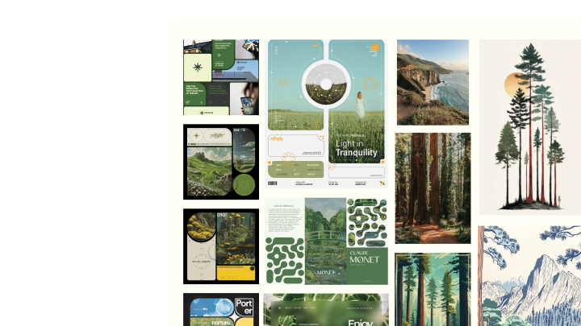
Wireframes V1
- Portrait of user
- Age & name display
- Side bar navigation w/ real ID and organ donor symbols
- Barcode scan
- Full information display
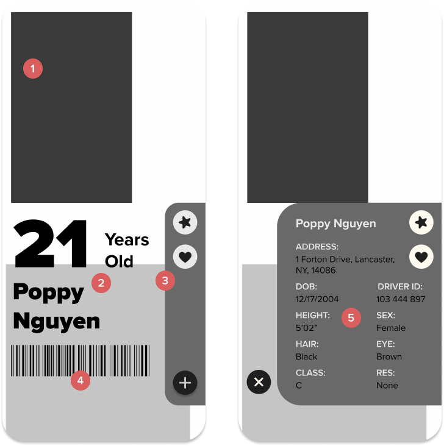
Iteration V1
I felt the colors really brought this design to life. The imagery was just the way I wanted it, and I loved the playful energy it had. Still, something felt too elementary in this design and the typography was insufficient so I moved onto my next design direction.
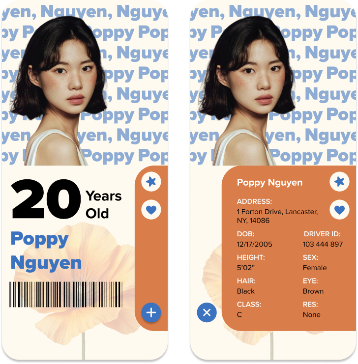
Wireframes V2
- Portrait of user
- Full information display
- Switch pages w/ buttons
- Real ID verification
- Age display
- Barcode scan
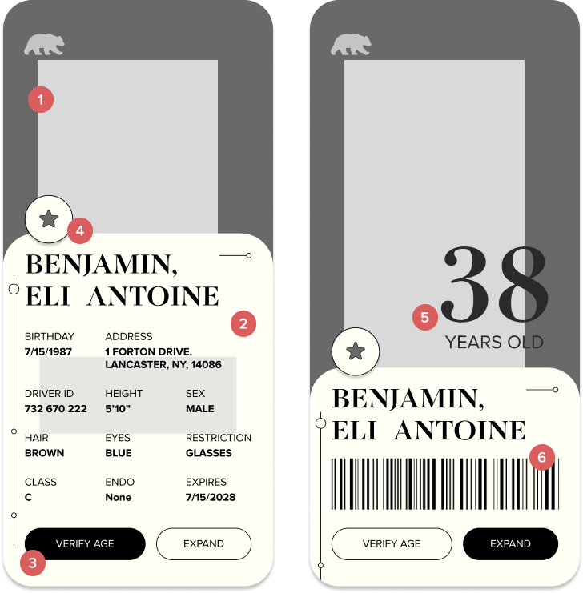
Iteration V2
For this design direction, I loved the simplicity of the UI and the colors felt calming just the way I intended. The typography still did not have good hierarchical value. Additionally, the two buttons at the bottom were not enough of a navigation system and the design felt unrealistic as an app.
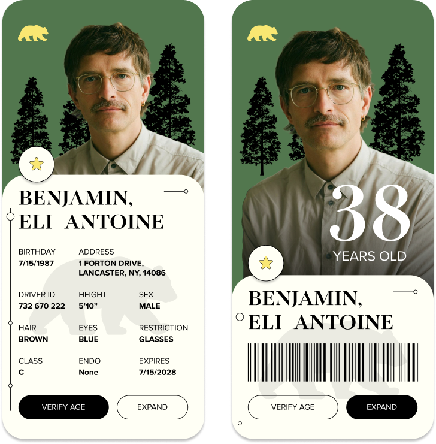
Final design
Style Guide
- Type
- TITLE - Novantique Serif Bold, 36/32pt
- SECTION TITLE - Proxima Nova Regular, 18pt
- INFORMATION - Proxima Nova Bold, 20pt
- Splash
- Adventures Unlimited Script, 64pt
Color/Assets
#52774E#FFF5B2#FFFFF5#212120
Static Screens
- Splash Screen
Splash Screen
- Full Info V1
Full Info V1
- Full Info V2
Full Info V2
- Age/Scan V1
Age/Scan V1
- Age/Scan V2
Age/Scan V2
- Confirmation to scan
- Ideally add another level of security
- Barcode
- Age/Scan View V1
Age/Scan View V1
- Age/Scan View V2
Age/Scan View V2
- Rounded corners make a gentle design
- Calming colors
- Illustrations and delicate lines are friendly
- Serif / sans serif combo is elegant
- Connections to nature are peaceful and feel adventurous
- Screen flow 1
- Screen flow 2
Reflection/Takeaways
I learned that it is easy for things to look the same, and therefore become redundant. It’s important to take visual risks; having different design dynamics doesn’t mean you have to compromise the style’s cohesion. If I were to redo this project, I would’ve explored more unique ways to display information.
Next steps:
add in the “Face ID” feature and develop the “Medical” page. Opportunities to add in a wallet feature.
thank you !
back to projects